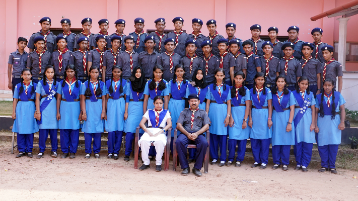

Scouts & Guides
Home |
About |
Classes |
Higher Secondary |
Teachers |
Facilities |
Labs |
Scouts & Guides |
Gallery |
Forms |
Contact
Scouts and Guides at Chembilode HSS
Scouts and Guides activities help students develop teamwork, leadership, discipline, service and responsibility.

Student Development
- Teamwork
- Leadership
- Discipline
- Service
- Outdoor and Group Activities